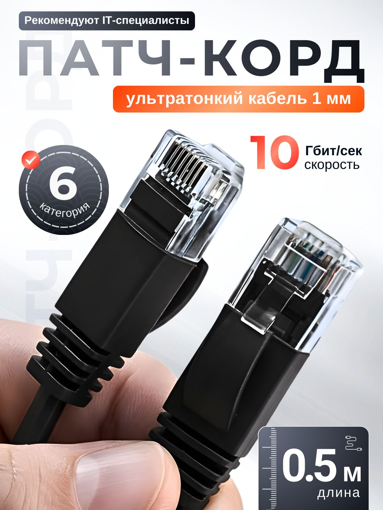

Патч-корд cat6 0.5 м, плоский, чёрный
ПроводаПлоский сетевой патч-корд Ethernet категории Cat6 длиной 0,5 м, чёрного цвета, с разъёмами RJ45 с обеих сторон. Используется для короткого подключения сетевых устройств в условиях ограниченного пространства.
Это готовый оконцованный патч-корд для локальной сети, рассчитанный на соединение ПК, свитчей, роутеров, патч-панелей и другой сетевой техники. Плоское исполнение удобно для прокладки под ковролином, вдоль плинтуса и в тесных кабель-каналах. По найденным спецификациям для подобных flat Cat6 patch cord обычно используется неэкранированная конструкция UTP, 8P8C/RJ45, с поддержкой частот до 250 МГц. Для этой позиции наиболее каноничным описанием является именно «Cat6 flat UTP patch cord 0.5 m black», без привязки к конкретному бренду.